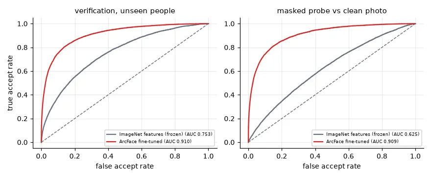
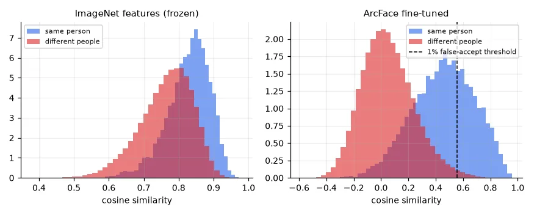
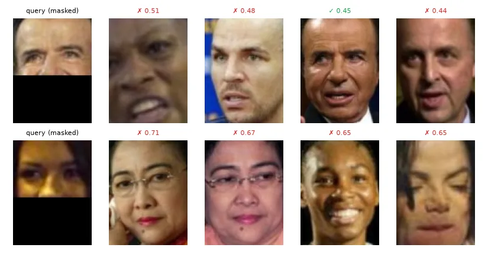

Why classification is the wrong framing#
A face-recognition system for a building has a list of employees that changes every week. A classifier with one output per employee would need retraining for every new hire — with a few photos each. And it has no way to say "this person is not in the list": softmax always picks someone.
Metric learning changes the question. Instead of "which of these \(K\) people is this?", learn a function \(f\) that maps a face to a vector — an embedding — such that photos of the same person are close and photos of different people are far apart. Then:
- Verification ("is this the same person?"): compare the similarity of two embeddings with a threshold.
- Identification ("who is this?"): find the nearest embedding in a gallery of enrolled people (k-NN, lesson 01) — and answer "unknown" if even the nearest is not similar enough.
- Enrolment: add a person by storing the embedding of one photo. No retraining.
The network never needs to have seen the people it recognises. That is the property we will measure: training uses 120 people of Labeled Faces in the Wild; every number below is computed on 38 other people.
@dataclass
class Config:
known_people: int = 120 # identities used for training; the others are never seen
max_per_person: int = 40 # cap George W. Bush's 530 photos
emb_dim: int = 128
epochs: int = 10
batch: int = 64
lr: float = 3e-4
arc_s: float = 30.0 # ArcFace scale
arc_m: float = 0.4 # ArcFace angular margin (radians)
p_occlude: float = 0.5 # probability of masking the lower face during training
cfg = Config()
lfw = fetch_lfw_people(data_home=str(U.CACHE), min_faces_per_person=10, color=True, resize=1.0)
rng = np.random.default_rng(0)
keep = np.concatenate([rng.permutation(np.flatnonzero(lfw.target == p))[:cfg.max_per_person]
for p in range(len(lfw.target_names))])
faces = torch.from_numpy(lfw.images[keep]).permute(0, 3, 1, 2) # (N, 3, 125, 94) float32, already in [0, 1]
ids = lfw.target[keep] # (N,) person index
people = rng.permutation(len(lfw.target_names))
known = people[:cfg.known_people]
train_mask = np.isin(ids, known)
print("%d images of %d people: %d images of %d people for training, %d images of %d unseen people for testing"
% (len(ids), len(people), train_mask.sum(), len(known), (~train_mask).sum(), len(people) - len(known)))
3217 images of 158 people: 2434 images of 120 people for training, 783 images of 38 unseen people for testing
(LFW has 530 photos of George W. Bush and 10 of many others; capping at 40 per person keeps one identity from dominating training and evaluation.)
The model and the ArcFace loss#
The embedder is lesson 14's pretrained ResNet-18 with its classifier replaced by a projection to 128 numbers, normalised to unit length — every face becomes a point on a sphere, and the similarity of two faces is the cosine of the angle between them (a dot product).
MEAN = torch.tensor([0.485, 0.456, 0.406])[:, None, None]
STD = torch.tensor([0.229, 0.224, 0.225])[:, None, None]
class Embedder(nn.Module):
"""ImageNet ResNet-18 trunk + a linear projection to a unit-length embedding."""
def __init__(self, dim=None):
super().__init__()
self.trunk = models.resnet18(weights=models.ResNet18_Weights.IMAGENET1K_V1)
self.trunk.fc = nn.Identity() # (B, 512) features
self.proj = nn.Linear(512, dim) if dim else nn.Identity() # dim=None: raw ImageNet features
def forward(self, x): # x: (B, 3, 125, 94) in [0, 1]
return nn.functional.normalize(self.proj(self.trunk((x - MEAN) / STD)), dim=1) # unit vectors
How do you train "same close, different far"? The triplet loss pulls an anchor towards a positive and pushes it from a negative, but needs careful mining of hard triplets. ArcFace (Deng et al., 2019) — the loss my original notebook used through pytorch-metric-learning — trains like a classifier over the training identities, with two twists:
- The logits are cosines between the embedding and one learnt direction \(\mathbf{W}_j\) per identity, scaled by \(s\): only angles matter.
- The true class must win by an angular margin \(m\): its logit uses \(\cos(\theta_y + m)\) instead of \(\cos\theta_y\).
The margin forces each identity into a tight cone, well separated from the others. The class directions \(\mathbf{W}\) are thrown away after training; what remains is an embedding space where new identities also form tight, separated clusters.
class ArcFace(nn.Module):
"""Additive angular margin loss: the true class must win by an angle m, on a sphere of radius s."""
def __init__(self, dim, n_classes, s, m):
super().__init__()
self.W = nn.Parameter(torch.randn(n_classes, dim) * 0.01) # one "centre" direction per class
self.s, self.m = s, m
def forward(self, emb, y):
cos = emb @ nn.functional.normalize(self.W).T # (B, C) cosine to each centre
theta = torch.acos(cos.clamp(-1 + 1e-6, 1 - 1e-6))
target = torch.cos(theta + self.m) # penalised true-class logit
onehot = nn.functional.one_hot(y, cos.shape[1]).bool()
logits = self.s * torch.where(onehot, target, cos)
return nn.functional.cross_entropy(logits, y)
Training with masks#
Faces at a building entrance may wear masks, scarves, or be partly hidden. My notebook added a RandomMaskOcclusion augmentation: half of the time, black out the lower face:
def occlude(x, start=0.55):
"""Black out the lower part of the face, like a mask (the RandomMaskOcclusion of my notebook)."""
x = x.clone()
x[..., int(x.shape[-2] * start):, :] = 0
return x
torch.manual_seed(0)
model = Embedder(cfg.emb_dim).to(device)
head = ArcFace(cfg.emb_dim, len(known), cfg.arc_s, cfg.arc_m).to(device)
remap = {p: i for i, p in enumerate(known)}
Xk = faces[train_mask]
yk = torch.tensor([remap[p] for p in ids[train_mask]])
opt = torch.optim.AdamW([{"params": model.parameters(), "lr": cfg.lr},
{"params": head.parameters(), "lr": 10 * cfg.lr}], weight_decay=1e-4)
t0 = time.time()
for epoch in range(cfg.epochs):
model.train()
total = 0.0
for idx in torch.randperm(len(Xk)).split(cfg.batch):
x = Xk[idx].clone()
flip = torch.rand(len(x)) < 0.5
x[flip] = x[flip].flip(-1) # horizontal flip
mask = torch.rand(len(x)) < cfg.p_occlude
x[mask] = occlude(x[mask]) # simulated face mask
loss = head(model(x.to(device)), yk[idx].to(device))
opt.zero_grad()
loss.backward()
opt.step()
total += loss.item() * len(idx)
print(f" epoch {epoch + 1:2d}: ArcFace loss {total / len(Xk):.3f}")
print("fine-tuning took %.1f min" % ((time.time() - t0) / 60))
epoch 1: ArcFace loss 16.704
...
epoch 10: ArcFace loss 1.189
fine-tuning took 4.7 min
Evaluation on people never seen#
@torch.no_grad()
def embed(net, X):
net.eval()
return torch.cat([net(X[i:i + 256].to(device)).cpu() for i in range(0, len(X), 256)]).numpy()
test = ~train_mask
who = ids[test]
iu = np.triu_indices(test.sum(), 1)
same = (who[:, None] == who[None, :])[iu] # pairs of the same person
def evaluate(G, P):
"""Unseen people only. Rank-1: is the most similar OTHER image of the same person?
Verification: ROC AUC of the cosine similarity over all pairs (same person vs different)."""
S = P @ G.T # (n, n) cosine similarities
sims = S[iu]
np.fill_diagonal(S, -np.inf) # never match an image with itself
return np.mean(who[S.argmax(1)] == who), roc_auc_score(same, sims), sims
results = {}
for name, net in [("ImageNet features (frozen)", Embedder().to(device)), ("ArcFace fine-tuned", model)]:
clean = embed(net, faces[test])
masked = embed(net, occlude(faces[test]))
results[name] = (evaluate(clean, clean), evaluate(clean, masked)) # masked probes vs clean gallery
(r1, a1, _), (r2, a2, _) = results[name]
print(f"{name:27s} clean: rank-1 {r1:.3f}, AUC {a1:.3f} | masked probes: rank-1 {r2:.3f}, AUC {a2:.3f}")
E = embed(model, faces) # (N, 128) embeddings of every image
Em = embed(model, occlude(faces))
ImageNet features (frozen) clean: rank-1 0.534, AUC 0.753 | masked probes: rank-1 0.086, AUC 0.625
ArcFace fine-tuned clean: rank-1 0.719, AUC 0.910 | masked probes: rank-1 0.688, AUC 0.909
- Rank-1: for each test photo, is the most similar other photo (among 783) the same person?
- AUC: over all 306,000 pairs, the probability that a same-person pair is more similar than a different-person pair (lesson 06's ROC, for verification).

Generic ImageNet features already know something about faces (AUC 0.75), but they collapse when half the face is hidden (rank-1 from 53% to 9%): they mostly encode the mouth, chin and background. The ArcFace embedding, trained with occlusion augmentation, loses almost nothing with a mask (AUC 0.910 → 0.909). Augmentation teaches the network what to ignore — here, it learnt to identify people from the eyes, brows and upper face.


Open-set identification: the threshold#
The nearest neighbour is always someone. Deciding when it is "nobody we know" requires a threshold, and the ROC curve is where it comes from: pick the false-accept rate you can tolerate, read off the similarity.
sims = results["ArcFace fine-tuned"][0][2]
fpr, tpr, thr = roc_curve(same, sims)
k = np.argmin(np.abs(fpr - 0.01))
t = thr[k] # accept a match only above this similarity
print("threshold for a 1%% false accept rate: cosine similarity > %.3f (true accept rate %.3f)" % (t, tpr[k]))
unseen = np.setdiff1d(people, known)
newcomer, stranger = unseen[0], unseen[1]
gallery = {lfw.target_names[p]: E[np.flatnonzero(ids == p)[0]] for p in unseen[2:22]} # 20 enrolled people
photos = np.flatnonzero(ids == newcomer)
gallery[lfw.target_names[newcomer]] = E[photos[0]] # enrol the newcomer with ONE photo
names, G = list(gallery), np.stack(list(gallery.values()))
print("newcomer:", lfw.target_names[newcomer], "| stranger:", lfw.target_names[stranger])
for q, label, emb in [(photos[1], "newcomer, another photo", E), (photos[2], "newcomer, masked photo", Em),
(np.flatnonzero(ids == stranger)[0], "stranger (not enrolled)", E)]:
s = G @ emb[q]
b = int(s.argmax())
print(f"{label:24s}: best match {names[b]:22s} similarity {s[b]:.3f} -> {names[b] if s[b] > t else 'unknown'}")
threshold for a 1% false accept rate: cosine similarity > 0.557 (true accept rate 0.352)
newcomer: Adrien Brody | stranger: Angelina Jolie
newcomer, another photo : best match Adrien Brody similarity 0.750 -> Adrien Brody
newcomer, masked photo : best match Adrien Brody similarity 0.752 -> Adrien Brody
stranger (not enrolled) : best match Catherine Zeta-Jones similarity 0.654 -> Catherine Zeta-Jones
Adrien Brody, never seen in training and enrolled with one photo, is recognised in another photo and with a mask. Angelina Jolie, not enrolled, is wrongly accepted as Catherine Zeta-Jones. Two reasons, both worth remembering:
- A per-pair error rate grows with the gallery. The threshold gives a 1% false-accept rate per comparison; an identification query compares against all 21 enrolled people, so the chance that at least one stranger–person pair crosses the threshold is roughly \(1 - 0.99^{21} \approx 19\%\) — more for look-alikes. Large galleries need much stricter thresholds.
- This model is weak by production standards. At 1% false accepts it only accepts 35% of genuine pairs. Five minutes of training on 2,400 photos of 120 people is a demonstration; real systems train on millions of faces (below) and reach a true-accept rate above 99% at a false-accept rate of 1 in 10⁵.
A distance is not a score
In the notebook, a query photo of a person who was not in the database returned "Neighbor 1: Label = Landon_Donovan Score: 1.1109", and after enrolling him, "Score: 0.9899" for his own label. I read these as similarity scores. They were distances: the k-NN index behind get_nearest_neighbors returns Euclidean distances between the unit-length embeddings (related to the cosine by \(d^2 = 2 - 2\cos\)), so lower is better, and 1.11 means a cosine of only about 0.4 — a poor match. The CosineSimilarity I had passed to the match finder is not what the neighbour search used. The ranking was right, the interpretation backwards. And with no threshold, the first query confidently named a stranger. Two rules: know whether your number is a similarity or a distance, and choose an acceptance threshold on validation pairs before deploying.
Save the whole model
The same notebook saved only the trunk (torch.save(trainer.models["trunk"].state_dict(), ...)) and then built the inference model from the trunk and the embedder still in memory. It worked in that session; in a fresh one, the embedder would have been randomly initialised and every embedding meaningless. Save every module the inference path uses — here the whole Embedder, projection included — and test the reload (lesson 12).
In practice#
- Production systems first detect and align the face (my notebook used MTCNN): a crop centred on the eyes at a fixed scale removes most of the variation the embedder would otherwise have to learn. LFW images are roughly centred already.
- They are trained on millions of identities (MS1M, WebFace), reaching >99.8% verification accuracy on LFW; the principles are the ones above.
- Face recognition is biometric data, regulated in many countries (LGPD in Brazil, GDPR in Europe): consent, storage of embeddings and error rates across demographic groups are part of the engineering, not an afterthought.
Exercises#
- Train without occlusion augmentation (
p_occlude=0) and compare the masked-probe numbers. - Replace ArcFace by a plain softmax classifier over the 120 identities (keep the normalised embedding). How much worse is verification on unseen people? Then try the margin \(m = 0.2\) and \(0.6\).
- Enrol each unseen person with the mean embedding of 3 photos instead of one. How does rank-1 identification change?